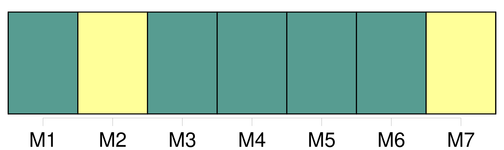
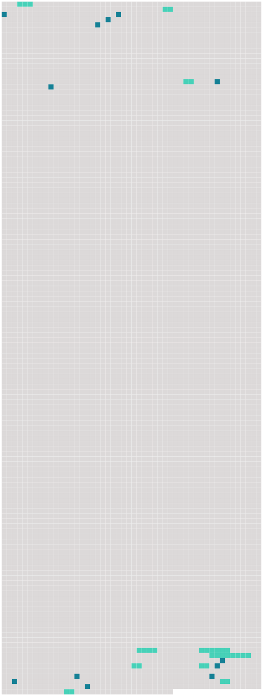

Longueur nb maillons : 22 mentions |
  |
Les actes d' [opposition au mariage] seront signés sur l'original et sur la copie par les opposans ou par leurs fondés de procuration spéciale et authentique ; ils seront signifiés, avec la copie, de la procuration à la personne ou au domicile des parties et à l'officier de l'état civil, qui mettra son visa sur l'original. [1 phrases]
L'officier de l'état civil fera, sans délai, une mention sommaire [des oppositions] sur le registre des publications ; il fera aussi mention, en marge de l'inscription desdites [oppositions] , des jugemens ou des actes de main-levée dont expédition lui aura été remise. [1 phrases]
En cas d' [opposition] , l'officier de l'état civil ne pourra célébrer le mariage, avant qu'on lui en ait remis la mainlevée, sous peine de trois cents francs d'amende, et de tous dommages-intérêts. [1 phrases]
S'il n'y a point d' [opposition] , il en sera fait mention dans l'acte de mariage ; et si les publications ont été faites dans plusieurs communes, les parties remettront un certificat délivré par l'officier de l'état civil de chaque commune, constatant qu'il n'existe point d' [opposition] [25 phrases]
[Les oppositions] , s'il y [en] a eu ; leur main-levée, ou la mention qu'il n'y a point eu d' [opposition] ; [248 phrases]
[Des oppositions au mariage] [1 phrases]
Le droit de former [opposition à la célébration du mariage] , appartient à la personne engagée par mariage avec l'une des deux parties contractantes. [1 phrases]
Le père, et à défaut du père, la mère, et à défaut de père et mère, les aïeuls et aïeules, peuvent former [opposition au mariage de leurs enfans et descendans] , encore que ceux -ci aient vingt-cinq ans accomplis. [1 phrases]
À défaut d'aucun ascendant, le frère ou la sœur, l'oncle ou la tante, le cousin ou la cousine germains, majeurs, ne peuvent former aucune [opposition] que dans les deux cas suivans : [1 phrases]
Lorsque [l'opposition] est fondée sur l'état de démence du futur époux : [cette opposition] , [dont] le tribunal pourra prononcer main-levée pure et simple, ne sera jamais reçue qu'à la charge, par l'opposant, de provoquer l'interdiction, et d'y faire statuer dans le délai qui sera fixé par le jugement. [1 phrases]
Dans les deux cas prévus par le précédent article, le tuteur ou curateur ne pourra, pendant la durée de la tutelle ou curatelle, former [opposition] qu'autant qu'il y aura été autorisé par un conseil de famille, qu'il pourra convoquer. [1 phrases]
Tout acte d' [opposition] énoncera la qualité qui donne à l'opposant le droit de [la] former ; il contiendra élection de domicile dans le lieu où le mariage devra être célébré ; il devra également, à moins qu'il ne soit fait à la requête d'un ascendant, contenir les motifs de [l'opposition] : le tout à peine de nullité, et de l'interdiction de l'officier ministériel qui aurait signé l'acte contenant [opposition] [5 phrases]
Si [l'opposition] est rejetée, les opposans, autres néanmoins que les ascendans, pourront être condamnés à des dommages-intérêts. |
 |
La ressource peut être téléchargée sur la page Ortolang
Si vous avez des questions ou vous voyez des erreurs, merci d'envoyer un mail à silvia.federzoni89@gmail.com
Site développé par S. Federzoni (contact)